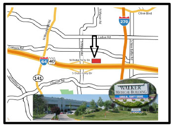

Our office is located in the Walker Medical Building
12855 North Forty Drive
Suite 260, South Tower
St. Louis, MO 63141
Online Maps: Mapquest, GoogleMaps
Hwy 40 East to Mason Rd. Take a left over the highway. Make a right onto North Forty Drive. Go 1/2 mile and turn left at the Walker Medical Building. Enter at the South Tower. Take the steps or elevator to the first floor. Then take the elevator on the first floor to the second floor. Go left when you exit the elevator to Suite 260.
Hwy 40 West to Mason Rd. Stay in the far right turn lane which takes you onto North Forty Drive. Go ½ mile and turn left at the Walker Medical Building. Enter at the South Tower. Take the steps or elevator to the first floor. Then take the elevator on the first floor to the second floor. Go left when you exit the elevator to Suite 260.